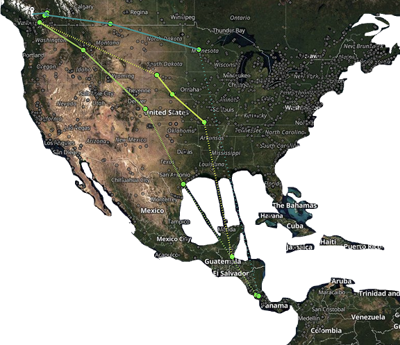

Signal & Noise Floor
166.380 MHz
Pulse Rate
—
Pulse Stream
0 pulses · 0 tags
ID SG-189DRPZ20169
LOC 43.4643°N 80.5204°W · Waterloo, ON
GPS 3D-fix
BOOT 233
PULSES 0
TAGS 0
LATEST IDENTIFIED PULSE
Swainson's Thrush (#1588)
Hatch-year (unknown sex)
tagged by BC Interior Thrushes
LAST DETECTED
2026-03-19
DEPLOYMENT DATE
2022-08-27
STATIONS VISITED
7

Latest Detections
MOTUS STATION
DETECTION DATE
STOPOVER DURATION
LOCATION
BFREE Belize
2026-03-19
66d 9h
BZ-TO
MDC HURLEY
2025-11-02
12d 4h
US-MO
Long Point Bird Obs.
2025-09-14
3d 2h
CA-ON
Manomet Shorebird
2025-08-31
1d 18h
US-MA
McGill Bird Obs.
2025-08-19
5d 11h
CA-QC
